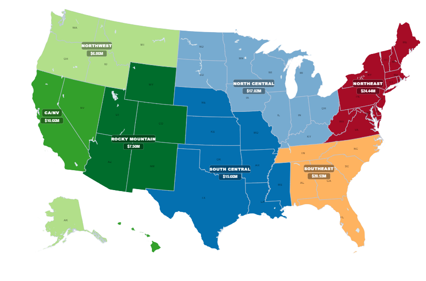

A sales map you can drill into, from the whole country down to a region, a state, and a single rep, with every account colored by attainment against goal. I built it on my own as a Power BI custom visual; it inherits the warehouse's row-level security, so each rep sees only their territory. It replaced a static slide deck. The demo runs on fake data.
Power BI custom visual